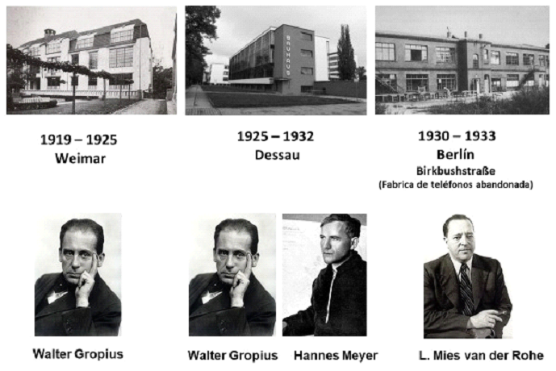

Durante la República de Weimar (1919-1933), Alemania vivió una especie de boom de las artes y oficios promovida por Walter Gropius, veterano de guerra e inspirada en el movimiento Arts and Crafts inglés.
Lo que Gropius tenía en mente era casi una utopia. La nueva Alemania destruída por la guerra sería reconstruida por una generación de jóvenes con habilidades prácticas e intelectuales para construir una sociedad más civilizada y menos egoísta.
Para ello hacía falta, antes de nada, una escuela de carácter democrático y co-educativo que podría impartir un plan de estudios fuera de lo convecional pensado para que cada estudiante siguiera su propio ritmo interno a nivel artístico y personal.
La Bauhaus que se traduce como casa de construcción fue fundada en Weimar en 1919, cuando Walter Gropius (1883-1969) unió la Escuela Superior de Artes Plásticas con la de Artes y Oficios del gran ducado de Sajonia, Weimar-Eisenach (la Kunstgewerbeschule, creada en 1906) que había dirigido Henry Van de Velde entre 1908 y 1915, año de su dimisión.
Esta institución antiacadémica, centro pedagógico y experimental de las artes, puede ser considerada como la primera escuela de diseño del mundo, aquella que funda las bases para el diseño moderno. Quizás en el imaginario de muchos se ha idealizado el momento que dio lugar a este espacio educativo tan singular como el de una Alemania económicamente activa e industrialmente desarrollada; sin embargo, al finalizar la Primera Guerra Mundial en 1918, se trataba de una nación en proceso de desintegración, sumida en el caos y estremecida por una gran crisis (Droeste 2015, 12).
Desde la unificación alemana (1871), la necesidad de ubicar al nuevo Estado Nación en el mercado mundial generó una voluntad de embellecer y perfeccionar la calidad de los objetos industriales para mejorar la competitividad de los productos y bienes de consumo alemanes, principios que la escuela heredaría de su vinculación con el Deutsche Werkbund (1). En este contexto, la propuesta de la Bauhaus estaba dirigida expresamente a obtener estándares de diseño de la más alta calidad dentro de la producción masiva, y esto comprendía tanto al diseño de la comunicación visual y el diseño industrial como a la arquitectura.
Entre los principios que guiaron al Deutsche Werkbund quizás la abolición de la división del trabajo (2) y el regreso a la unidad entre diseño y producción fueron los más significativos; aquellos mismos que condujeron al movimiento Arts and Crafts a partir de 1861 de la mano de William Morris a la renovación de las artes y oficios en Inglaterra. A partir de allí, se plantearon las preguntas sobre la naturaleza del buen diseño, cómo deberían enseñarse el arte y la artesanía y los efectos que los edificios tienen sobre las personas que los habitan (Whitford 1984, 7).
Si bien la escuela buscaba una nueva expresión artística en la era de la máquina, la respuesta no fue solo la sustitución del ornamento por la forma abstracta como base estética del diseño industrial, sino la idea de que el arte y la técnica formasen una nueva unidad acorde a su tiempo (Bürdek 1999, 28). Gropius era consciente que el nuevo diseñador industrial no podía ser formado a la manera de las academias, en donde se pretendía crear una obra única e irrepetible, pero tampoco era adecuado el método utilizado por las escuelas de artes y oficios, cuyo pragmatismo no admitía la posibilidad de mejorar la calidad del diseño. Estas inquietudes fueron entonces las que lo animaron a presentar su propuesta pedagógica, que pretendía unir las dos escuelas para lograr una formación integral. Así es que decidió crear un nuevo centro educativo que lograría, en la era de la reproductibilidad técnica, una síntesis estética mediante la integración de todos los géneros del arte con las artes aplicadas, bajo la primacía de la arquitectura (Bürdek 1999, 33).
El Vorkurs tenía como fin enseñar a los estudiantes los fundamentos y características de los materiales, composición y color. Durante los primeros años, el taller preliminar estuvo dirigido por el carismático pintor suizo Johannes Itten (1888-1967), quien estimulaba la creatividad individual desde una propuesta más experimental y artística método inductivo y cuyo deseo utópico de crear una nueva sociedad espiritual estaba marcado por un profundo misticismo (Meggs y Purvis 2009, 310-311).
Aunque si bien la dirección de la institución está marcada por tres importantes figuras del diseño y la arquitectura como Gropius (1919-1928), Hannes Meyer (1928-1930) y Ludwig Mies Van der Rohe (1930-1933), estos últimos fueron fuertes rivales de la propuesta intelectual de Gropius. Sin embargo hubo una continuidad que residía esencialmente en las aspiraciones antiacadémicas y reformadoras (Droeste 2015, 9). Asimismo las distintas ciudades en las que se estableció la Bauhaus fueron de singular importancia para su desarrollo experimental.
En un inicio, la Bauhaus ocupa el espacio físico de la antigua Escuela de Artes y Oficios de Weimar cuyo gobierno, de sesgo socialista, apoyó la apertura de este espacio educativo. Con los cambios políticos que determinaron una mayoría nacionalista en el parlamento (1924), y con la oposición de los artesanos locales, que se resistían a los estrechos lazos entre la escuela y la industria (Droeste 2015, 151), se dispuso el traslado de la institución a otra ciudad.
En septiembre de 1924, la propuesta más generosa para restablecer la escuela fue de la ciudad de Dessau. Con un gobierno socialdemócrata, una población de 70.000 habitantes y un número importante de industrias modernas entre las que destacaba la fábrica de aviones Junkers y el 25% de las industrias químicas de Alemania concentradas en el área (Whitford 1984, 154), Dessau se convertiría en la mejor opción para la construcción del nuevo edificio que albergaría a la escuela.
El diseño estuvo a cargo de su director, Walter Gropius, y se convirtió en su obra maestra. La nueva sede se construyó entre 1925 y 1926 sobre terrenos públicos: dos manzanas otorgadas por el alcalde Fritz Hesse, atravesadas por una calle pública (Droeste 2015, 155). El proyecto consideraba la propuesta pedagógica para resolver la distribución funcional del edificio. Se establecieron las áreas de enseñanza de aulas y talleres a ambos lados de la calle, atravesada por un puente que vinculaba ambos sectores y alojaba la administración, las oficinas del director y algunos profesores. Completaba el conjunto un área con 28 pequeños estudios, pensadas como habitaciones de estudiantes.
Las principales características del diseño gráfico de la Bauhaus son los impresos sin adornos, la articulación y acentuación de páginas con símbolos distintos o de elementos tipográficos destacados en colores planos, y la información directa, sin adornos, en una combinación de texto y fotografía, para la cual el nombre “Tipofoto” fue creado. Tipografía es la comunicación compuesta con tipos, fotografía es la representación visual de lo que puede ser capturado ópticamente, “tipofoto” es la representación visual más exacta de la comunicación.
En la Bauhaus se busca la sistematización tipográfica. Importa enfatizar la claridad, pues la legibilidad debe quedar por encima de la estética.En la primera etapa de la Bauhaus como escuela, de 1919 hasta el 23, predomina la vanguardia alemana expresionista, a partir de 1923 por el Neoplasticismo holandés y el Constructivismo ruso. En esta etapa el húngaro Laszlo Moholy Nagy, busca superar lo pictórico del expresionismo por el énfasis en la experiencia de lo sistemático y el uso de los materiales y objetos seriados de posible uso industrial.
Pero Gropius tenía enemigos. Quizás el peor era Adolf Hitler, antiguo artista fracasado, que estaba empezando a subir políticamente con su partido de agitadores y bravucones que parecía tener hipnotizada a cada vez más gente.
Hitler odiaba tres cosas: el modernismo, los intelectuales y los judíos. En la Bauhaus abundaban todos estos especímenes, así que cuando el führer se hizo al fin con el poder, la escuela tenía los días contados.
Gropius decidió hacerse un lado y le cedió las riendas a un más que eficiente Mies van der Rohe (si… el de «Menos es más») que trasladó la escuela a Dessau y luego a Berlín.
En 1933 la más grande escuela de arte y diseño del mundo se convirtió de la noche a la mañana para el gobierno en un nido de víboras y alimañas creando arte decadente y subversivo, por lo que se ordenó su cierre inmediato. Y para que nadie olvidara lo que detestaba las abominaciones que se hacían ahí, organizó una exposición de Entartete Kunst.
Todo el arte moderno del país fue saqueado y destruído. Pero los artistas que ahí habían creado (al menos los que pudieron) divulgaron la doctrina de la Bauhaus por todo el mundo, creando una frecuencia cuyas vibraciones llegan a hoy en día, desde el iPhone hasta Ikea.